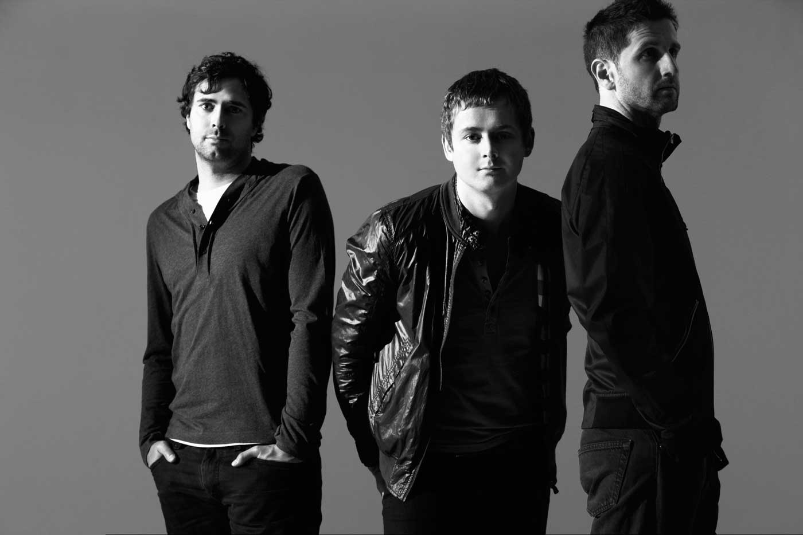
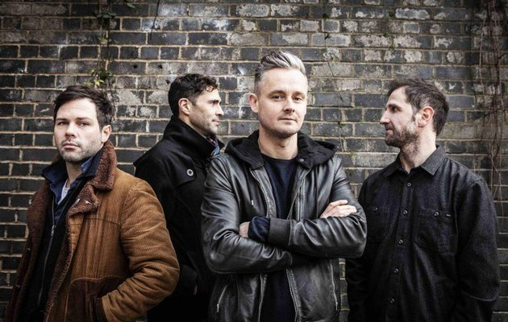

COMIENZOS
Keane es una banda inglesa de rock alternativo, formada en 1995, procedente de Battle, East Sussex,
en el sureste de Inglaterra. Sus primeros 4 álbumes en estudio, Hopes and Fears (2004), Under the
Iron Sea (2006), Perfect Symmetry (2008), Strangeland (2012) fueron directos al número 1 de la
lista británica de ventas UK Albums Chart.
Inmediatamente después de su lanzamiento consiguiendo cerca de 10 millones de discos vendidos en
total.

REENCUENTRO
Estuvieron separados de manera temporal desde 2014 hasta enero de 2019. Pero el 17 de enero de 2019,
un artículo del periódico "The Sun" reveló que la banda está planeando "regresar después de seis
años de distancia" y que "una fuente cercana a los rockeros ha revelado que la banda está lista para
trabajar de nuevo después de "poner sus diferencias a un lado". El 30 de mayo de 2019, se reveló que el nuevo álbum se llama Cause and Effect. Una semana después, el 6 de junio de 2019, la banda lanzó el primer sencillo del álbum, titulado "The Way I Feel".
